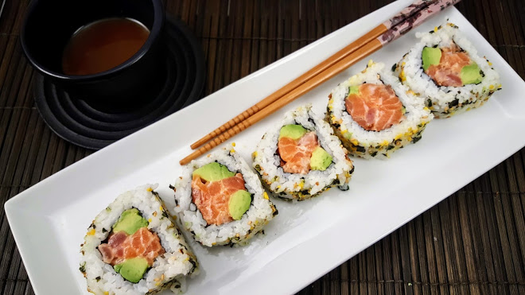

Sushi de Californie
Le sushi: est un plat japonais populaire. Dans la cuisine japonaise, les sushis sont préparés à partir de riz mariné, recouverts de fines lanières de poisson cru, sans peau et sans peau. Le riz est enroulé autour de diverses garnitures de fruits de mer, de légumes, de petit-déjeuner, d'œufs de poisson ou de viande rouge. Ce rouleau est enveloppé d'un fine feuille d'algues pour tenir et ajouter une autre saveur.

Ingrédients California Sushi:
- Deux tasses de riz japonais.
- Deux tasses d'eau.
- Quatre cuillères à café de vinaigre de riz.
- Quatre cuillères à café de sucre.
- Deux cuillères à café de sel.
Ingrédients de remplissage:
- Quatre papiers Nuri.
- Concombre, pelé et coupé en petits cubes.
- Quatre doigts de crabe.
- 1 avocat, pelé et coupé en petits cubes.
Couche ornementale:
- La quantité d'œufs de poisson.
- sauce soja.

la façon de préparer:
- Lavez bien le riz, puis faites-le cuire avec de l'eau dans une casserole à feu moyen.
- Réduire la chaleur sous le riz après ébullition, puis laisser mijoter pendant un quart d'heure.
- Laissez le riz de côté pendant dix minutes avant de l'utiliser.
- Mélangez tout: sucre, vinaigre de riz, en plus du sel dans un bol en verre, et mettez-le au micro-ondes pendant une période ne dépassant pas 45 secondes.
- Ajouter le mélange précédent au riz, bien mélanger les ingrédients à l'aide d'une cuillère en bois, puis laisser refroidir.
- Coupez les feuilles de nori au milieu sur un morceau de nylon.
- Mettre une couche de riz sur le nori, en veillant à garder une distance d'au moins deux centimètres des côtés.
- Mettez le crabe, le concombre et l'avocat sur la feuille de nori, puis roulez-la en forme de cylindre.
- Répétez les étapes précédentes jusqu'à ce que la quantité soit terminée.
- Trempez un morceau de sushi dans les œufs de poisson, jusqu'à ce qu'ils soient complètement enrobés.
- Mettez un morceau de sushi au réfrigérateur jusqu'à ce qu'il colle pendant au moins une demi-heure.
- Coupez les sushis en six morceaux et servez avec la sauce soja.

Pour en savoir plus sur les types de susi, veuillez visiter ce site le site